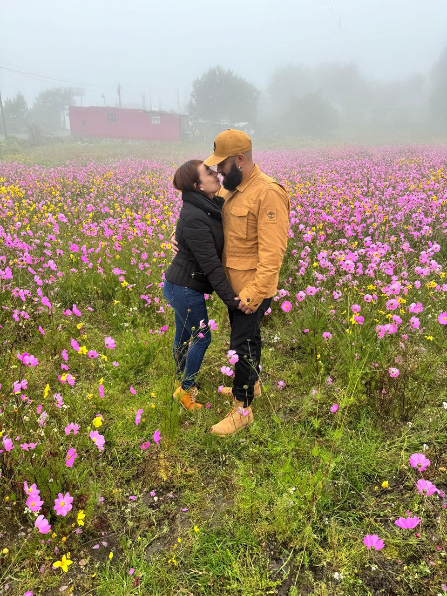
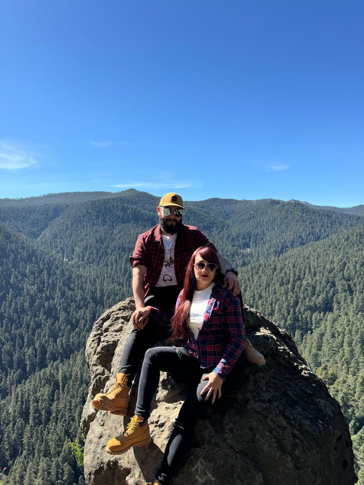
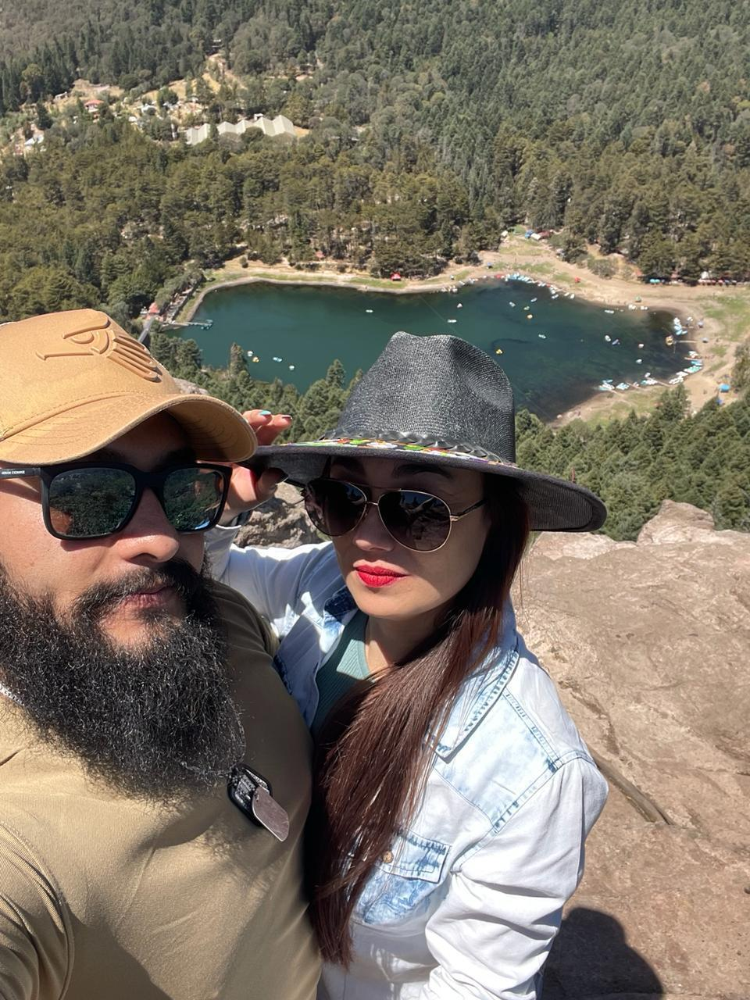
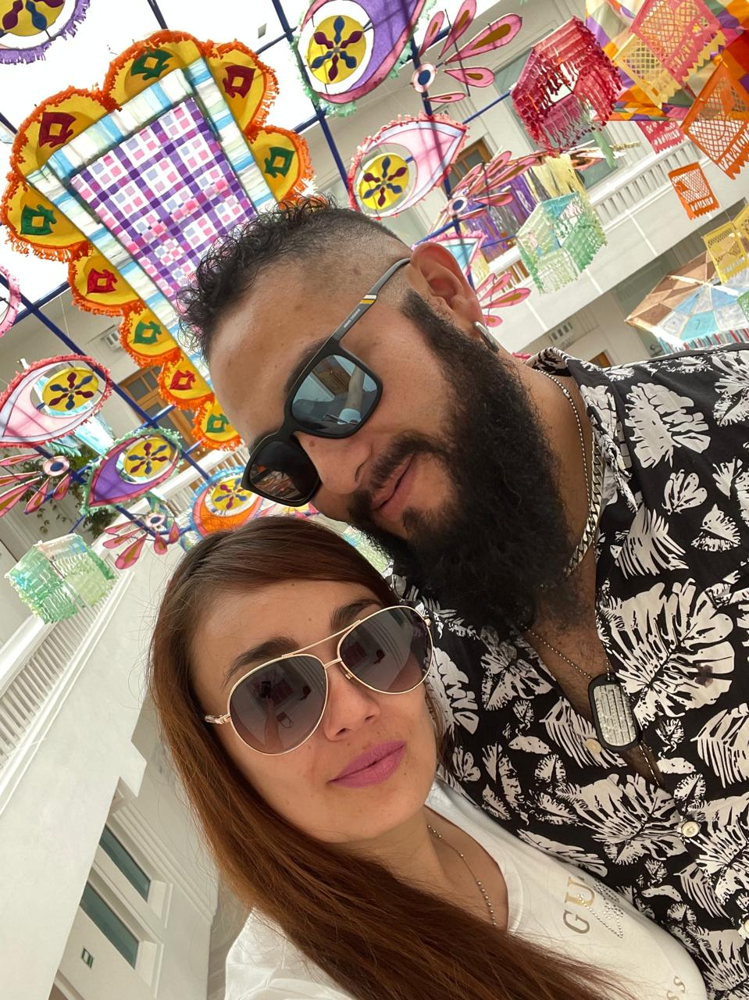
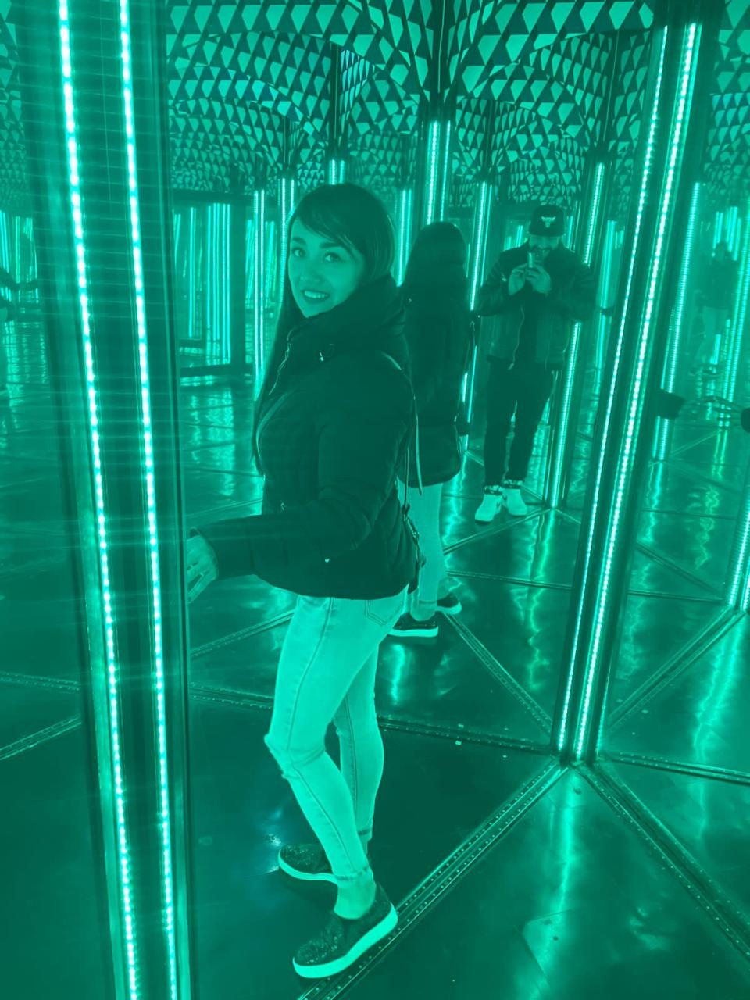

Nancy
&
Salvador
Con la bendicion de dios y nuestras familias
los invitamos a nuestra boda
Viernes
20
Marzo
2026
church
Ceremonia Religiosa
Santuario de la Siempre Virgen María de Guadalupe, Casa de San Juan Diegoa
Calz. de Guadalupe Manzana 008,
El Cerrito, 54879 Cuautitlán, Méx
5:00 PM
Ver Mapa
liquor
Recepción
Salón Villa Jardín San Mateo
San Mateo Ixtacalco, Cuautitlan México Méx MX,
C. Miraflores 5-I, 54840
7:30 PM
Ver MapaGalería de Fotos






#GabrielaYAbraham2024